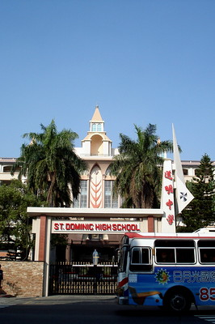

Setelah memilih, kami diminta menjelaskan perasaan kami saat melakukan aksi ini dan juga manfaat dari seluruh kegiatan.
Tugas PPKN untuk edutrip Taiwan adalah untuk menyimpulkan hasil dari kegiatan aksi peduli lingkungan (atau juga dikenal sebagai community service). Ada 2 jenis community service :
Setelah memilih, kami diminta menjelaskan perasaan kami saat melakukan aksi ini dan juga manfaat dari seluruh kegiatan.